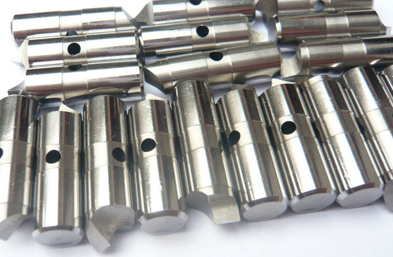
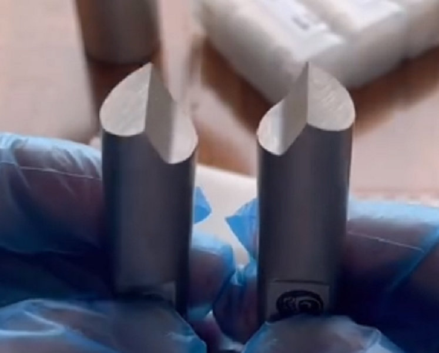
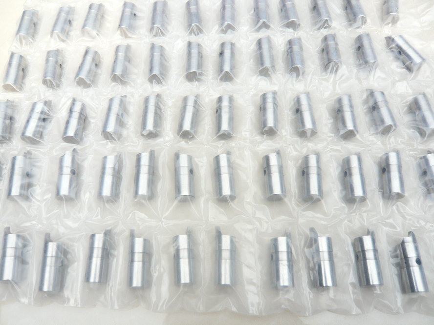
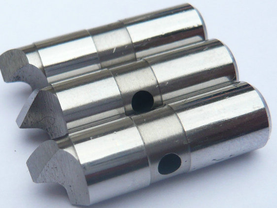

OEM S7 drive pins on hydraulic face driver for castings, forgings, Heavy roughing ! USA supplier: hydraulic drive pins for Precision grinding, hardened steel HRC60.
Hydraulic drive pins are specified for the most demanding processes: Hard turning of hardened steel (up to 65 HRC) with ceramic or CBN inserts. Precision grinding – cylindrical, centerless, and camshaft grinding where vibration must be eliminated.


Heavy roughing on forged or cast surfaces with interrupted cuts. Uneven end faces – castings, forgings, or parts with up to 7° face taper. Automated cells – repeatable part length and zero unplanned downtime.
In a hydraulic face driver, the center point is fixed – it does not retract. Its sole job is to provide an absolute rotational reference and to locate the workpiece axially. Once the center is engaged, the hydraulic pins extend independently. The center handles centering and axial positioning; the pins handle torque transmission. This strict分工 (division of labor) is why hydraulic systems achieve such high length accuracy and concentricity.


A hydraulic drive pin is an actively actuated pin that extends outward under hydraulic oil pressure. Unlike mechanical pins that remain fixed while a spring‑loaded center retracts, hydraulic pins work together with a fixed center point. The center does not move. Instead, after the workpiece is centered and pre‑loaded, pressurized oil (typically 35–70 bar) pushes each pin piston forward, forcing the pin tips to positively engage the workpiece end face.
Because all hydraulic chambers are interconnected, the system automatically balances the force among all pins. If the end face is tilted or irregular – up to 7 degrees – oil flows from chambers with higher resistance to those with lower resistance, ensuring every pin applies equal clamping force. This is true active compensation, far beyond what any mechanical spring can achieve.
Mechanical face Drive Pins vs. Hydraulic face Driver Pins.
| Feature | Mechanical (Spring) driving pins | Hydraulic face drive pins | |||||||||
|---|---|---|---|---|---|---|---|---|---|---|---|
| Center type | Spring-loaded (retractable) | Fixed | |||||||||
| Pin action | Passive (workpiece pushed into pins) | Active (pins extend outward) | |||||||||
| Force / compensation | Spring force | Oil pressure, self‑equalizing | |||||||||
| Max. face tilt compensation | Low (≈2‑3°) | High (up to 7°) | |||||||||
| Typical TIR accuracy | 0.01 – 0.03 mm | 0.002 – 0.005 mm | |||||||||
| Best for | General turning, hobbing, milling | Hard turning, grinding, finishing | |||||||||
| Power source needed | No | Yes (hydraulic unit) | |||||||||
hydraulic face drivers: the patented “wedge-lever” mechanism uses hydraulic actuation for self-balancing drive pins. Their grinding-specific drivers achieve runout accuracy better than 0.002 mm. Standard shank interfaces include MT2 through MT6, as well as flange or chuck mounting options.
FFB / FFBH series: The FFBH variant features hydraulic compensation, delivering excellent concentricity and high clamping force for both turning and grinding. These drivers incorporate easy-to-service hydraulic cartridges for simplified maintenance.
60 / 61 / 64 series: the hydraulic face drivers use pressurized hydraulic oil to equalize pin forces. Each drive pin has a sealed piston, allowing up to 7 degrees of workpiece end-face tilt while maintaining uniform clamping.
Hydraulic drive pins provide three critical advantages. First, controllable clamping force—hydraulic pressure can be precisely regulated to match workpiece material and machining loads. Second, rigid fixed center—most hydraulic drivers use a stationary live center that establishes an extremely accurate, rigid rotational datum, essential for tight-tolerance work. Third, heavy-duty capability—the active hydraulic system delivers high, balanced clamping force ideal for roughing operations with deep cuts and high feed rates.
- home
- home
- products
- contact
- equipments
- offset driving parts
- half offset drive pins
- central driver parts
- standard/ Fixed driving pins
- Lowered drive parts
- clockwise driver pins
- counterclockwise driving parts
- full width drive pins
- Lasting driver parts
- chisel-edged driving pins
- floating drive parts
- power-operated driver pins
- hydraulic driving parts
- mechanical drive pins
- movable driver parts
- fixed driving pins
- carbide driver pins
- tool steel S7 driving parts
- changeable pins
- face drive pins